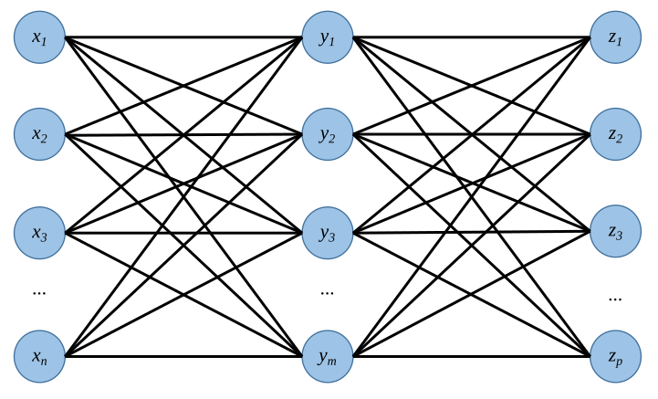
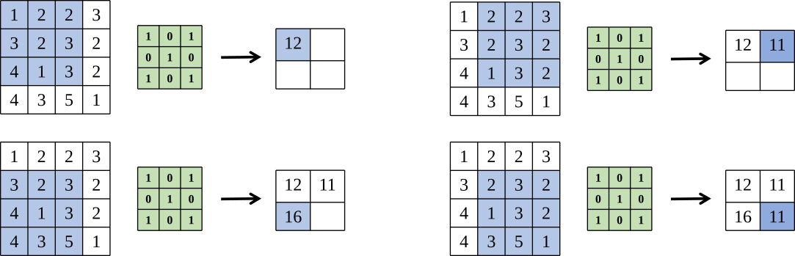
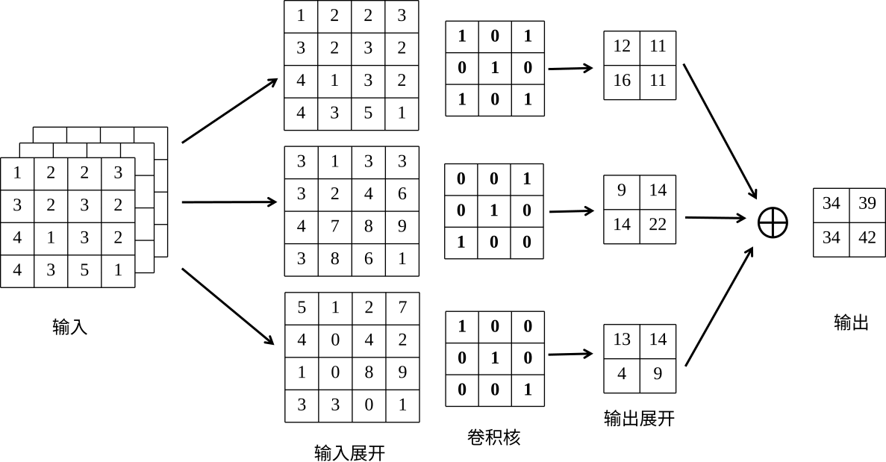
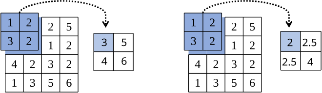
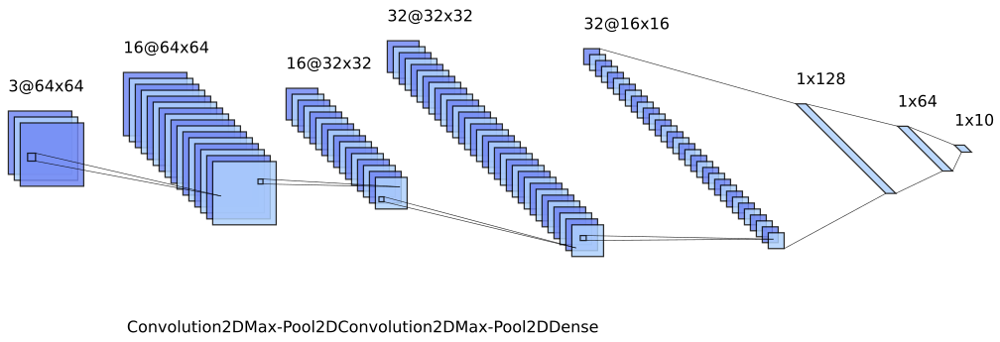
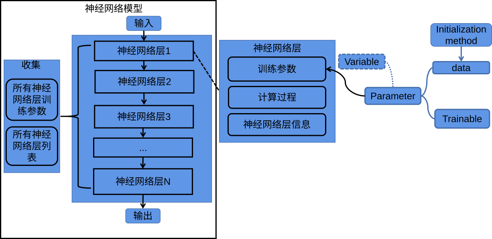
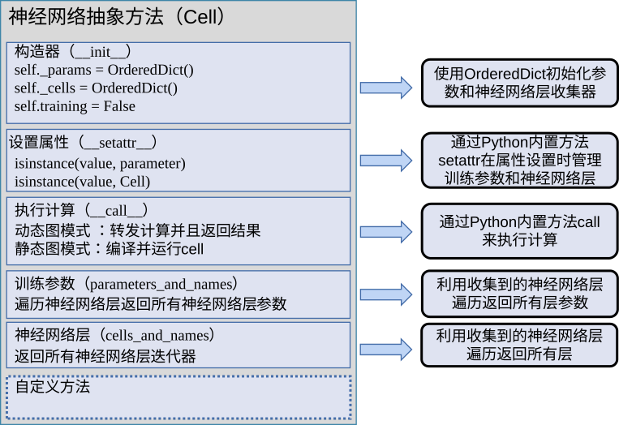

定义深度神经网络
在上一节我们使用MindSpore构建了一个多层感知机的网络结构，随着深度神经网络的飞速发展，各种深度神经网络结构层出不穷，但是不管结构如何复杂，神经网络层数量如何增加，构建深度神经网络结构始终遵循最基本的元素：1.承载计算的节点；2.可变化的节点权重（节点权重可训练）；3.允许数据流动的节点连接。因此在机器学习编程库中深度神经网络是以层为核心，它提供了各类深度神经网络层基本组件；将神经网络层组件按照网络结构进行堆叠、连接就能构造出神经网络模型。
以层为核心定义神经网络
神经网络层包含构建机器学习网络结构的基本组件，如计算机视觉领域常用到卷积(Convolution)、池化(Pooling)、全连接(Fully Connected)；自然语言处理常用到循环神经网络(Recurrent Neural Network，RNN)；为了加速训练，防止过拟合通常用到批标准化（BatchNorm）、Dropout等。
全连接是将当前层每个节点都和上一层节点一一连接，本质上是特征空间的线性变换；可以将数据从高维映射到低维，也能从低维映射到高维度。 图2.3.1展示了全连接的过程，对输入的n个数据变换到大小为m的特征空间，再从大小为m的特征空间变换到大小为p的特征空间；可见全连接层的参数量巨大，两次变换所需的参数大小为\(n \times m\)和\(m \times p\)。

图2.3.1 全连接层
卷积操作是卷积神经网络中常用的操作之一，卷积相当于对输入进行滑动滤波。根据卷积核（Kernel）、卷积步长（Stride）、填充（Padding）对输入数据从左到右，从上到下进行滑动，每一次滑动操作是矩阵的乘加运算得到的加权值。 如 图2.3.2卷积操作主要由输入、卷积核、输出组成输出又被称为特征图（Feature Map）。
图2.3.2 卷积操作的组成
卷积的具体运算过程我们通过 图2.3.3进行演示。该图输入为\(4 \times 4\)的矩阵，卷积核大小为\(3 \times 3\)，卷积步长为1，不填充，最终得到的\(2 \times 2\)的输出矩阵。 计算过程为将\(3 \times 3\)的卷积核作用到左上角\(3 \times 3\)大小的输入图上；输出为\(1 \times 1 + 2 \times 0 + 2 \times 1 + 3 \times 0 + 2 \times 1 + 3 \times 0 + 4 \times 1 + 1 \times 0 + 3 \times 1 = 12\), 同理对卷积核移动1个步长再次执行相同的计算步骤得到第二个输出为11；当再次移动将出界时结束从左往右，执行从上往下移动1步，再进行从左往右移动；依次操作直到从上往下再移动也出界时，结束整个卷积过程，得到输出结果。我们不难发现相比于全连接，卷积的优势是参数共享（同一个卷积核遍历整个输入图）和参数量小（卷积核大小即是参数量）。

图2.3.3 卷积的具体运算过程
在卷积过程中，如果我们需要对输出矩阵大小进行控制，那么就需要对步长和填充进行设置。还是上面的输入图，如需要得到和输入矩阵大小一样的输出矩阵，步长为1时就需要对上下左右均填充一圈全为0的数。
在上述例子中我们介绍了一个输入一个卷积核的卷积操作。通常情况下我们输入的是彩色图片，有三个输入，这三个输入称为通道（Channel），分别代表红、绿、蓝（RGB）。此时我们执行卷积则为多通道卷积，需要三个卷积核分别对RGB三个通道进行上述卷积过程，之后将结果加起来。 具体如 图2.3.4描述了一个输入通道为3，输出通道为1，卷积核大小为\(3 \times 3\)，卷积步长为1的多通道卷积过程；需要注意的是，每个通道都有各自的卷积核，同一个通道的卷积核参数共享。如果输出通道为\(out_c\)，输入通道为\(in_c\)，那么需要\(out_c\)\(\times\)\(in_c\)个卷积核。

图2.3.4 多通道卷积
池化是常见的降维操作，有最大池化和平均池化。池化操作和卷积的执行类似，通过池化核、步长、填充决定输出；最大池化是在池化核区域范围内取最大值，平均池化则是在池化核范围内做平均。与卷积不同的是池化核没有训练参数；池化层的填充方式也有所不同，平均池化填充的是0，最大池化填充的是\(-inf\)。 图2.3.5是对\(4 \times 4\)的输入进行\(2 \times 2\)区域池化，步长为2，不填充；图左边是最大池化的结果，右边是平均池化的结果。

图2.3.5 池化操作
有了卷积、池化、全连接组件就可以构建一个非常简单的卷积神经网络了， 图2.3.6展示了一个卷积神经网络的模型结构。 给定输入\(3 \times 64 \times 64\)的彩色图片，使用16个\(3 \times 3 \times 3\)大小的卷积核做卷积，得到大小为\(16 \times 64 \times 64\)的特征图； 再进行池化操作降维，得到大小为\(16 \times 32 \times 32\)的特征图； 对特征图再卷积得到大小为\(32 \times 32 \times 32\)特征图，再进行池化操作得到\(32 \times 16 \times 16\)大小的特征图； 我们需要对特征图做全连接，此时需要把特征图平铺成一维向量这步操作称为Flatten，压平后输入特征大小为\(32\times 16 \times 16 = 8192\)； 之后做一次全连接对大小为8192特征变换到大小为128的特征，再依次做两次全连接分别得到64，10。 这里最后的输出结果是依据自己的实际问题而定，假设我们的输入是包含\(0 \sim 9\)的数字图片，做分类那输出对应是10个概率值，分别对应\(0 \sim 9\)的概率大小。

图2.3.6 卷积神经网络模型
有了上述基础知识，对卷积神经网络模型构建过程使用伪代码描述如下：
# 构建卷积神经网络的组件接口定义：
全连接层接口：fully_connected(input, weights)
卷积层的接口：convolution(input, filters, stride, padding)
最大池化接口：pooling(input, pool_size, stride, padding, mode='max')
平均池化接口：pooling(input, pool_size, stride, padding, mode='mean')
# 构建卷积神经网络描述：
input:(3,64,64)大小的图片
# 创建卷积模型的训练变量,使用随机数初始化变量值
conv1_filters = variable(random(size=(3, 3, 3, 16)))
conv2_filters = variable(random(size=(3, 3, 16, 32)))
fc1_weights = variable(random(size=(8192, 128)))
fc2_weights = variable(random(size=(128, 64)))
fc3_weights = variable(random(size=(64, 10)))
# 将所有需要训练的参数收集起来
all_weights = [conv1_filters, conv2_filters, fc1_weights, fc2_weights, fc3_weights]
# 构建卷积模型的连接过程
output = convolution(input, conv1_filters, stride=1, padding='same')
output = pooling(output, kernel_size=3, stride=2, padding='same', mode='max')
output = convolution(output, conv2_filters, stride=1, padding='same')
output = pooling(output, kernel_size=3, stride=2, padding='same', mode='max')
output = flatten(output)
output = fully_connected(output, fc1_weights)
output = fully_connected(output, fc2_weights)
output = fully_connected(output, fc3_weights)
随着深度神经网络应用领域的扩大，诞生出了丰富的模型构建组件。在卷积神经网络的计算过程中，前后的输入是没有联系的，然而在很多任务中往往需要处理序列信息，如语句、语音、视频等，为了解决此类问题诞生出循环神经网络（Recurrent Neural Network，RNN）； 循环神经网络很好的解决了序列数据的问题，但是随着序列的增加，长序列又导致了训练过程中梯度消失和梯度爆炸的问题，因此有了长短期记忆（Long Short-term Memory，LSTM）； 在语言任务中还有Seq2Seq它将RNN当成编解码（Encoder-Decoder）结构的编码器（Encoder）和解码器（Decode）； 在解码器中又常常使用注意力机制（Attention）；基于编解码器和注意力机制又有Transformer； Transformer又是BERT模型架构的重要组成。随着深度神经网络的发展，未来也会诞生各类模型架构，架构的创新可以通过各类神经网络基本组件的组合来实现。
神经网络层的实现原理
3.3.1中使用伪代码定义了一些卷积神经网络接口和模型构建过程，整个构建过程需要创建训练变量和构建连接过程。随着网络层数的增加，手动管理训练变量是一个繁琐的过程，因此3.3.1中描述的接口在机器学习库中属于低级API。机器学习编程库大都提供了更高级用户友好的API，它将神经网络层抽象出一个基类，所有的神经网络层都继承基类来实现，如MindSpore提供的mindspore.nn.Cell；PyTorch提供的torch.nn.Module。基于基类他们都提供了高阶API，如MindSpore 提供的mindspore.nn.Conv2d、mindspore.nn.MaxPool2d、mindspore.dataset；PyTorch提供的torch.nn.Conv2d、torch.nn.MaxPool2d、torch.utils.data.Dataset。
图2.3.7描述了神经网络构建过程中的基本细节。基类需要初始化训练参数、管理参数状态以及定义计算过程；神经网络模型需要实现对神经网络层和神经网络层参数管理的功能。在机器学习编程库中，承担此功能有MindSpore的Cell、PyTorch的Module。Cell和Module是模型抽象方法也是所有网络的基类。现有模型抽象方案有两种，一种是抽象出两个方法分别为Layer（负责单个神经网络层的参数构建和前向计算），Model（负责对神经网络层进行连接组合和神经网络层参数管理）；另一种是将Layer和Model抽象成一个方法，该方法既能表示单层神经网络层也能表示包含多个神经网络层堆叠的模型，Cell和Module就是这样实现的。

图2.3.7 神经网络模型构建细节
图2.3.8展示了设计神经网络层抽象方法的通用表示。通常在构造器会选择使用Python中collections模块的OrderedDict来初始化神经网络层和神经网络层参数的存储；它的输出是一个有序的，相比与Dict更适合深度学习这种模型堆叠的模式。参数和神经网络层的管理是在__setattr__中实现的，当检测到属性是属于神经网络层及神经网络层参数时就记录起来。神经网络模型比较重要的是计算连接过程，可以在__call__里重载，实现神经网络层时在这里定义计算过程。训练参数的返回接口给优化器传所有训练参数，这些参数是基类遍历了所有网络层后得到的。这里只列出了一些重要的方法，在自定义方法中，通常需要实现参数插入删除、神经网络层插入删除、神经网络模型信息返回等方法。

图2.3.8 神经网络基类抽象方法
神经网络接口层基类实现，仅做了简化的描述，在实际实现时，执行计算的__call__方法并不会让用户直接重载，它往往在__call__之外定义一个执行操作的方法（对于神经网络模型该方法是实现网络结构的连接，对于神经网络层则是实现计算过程）后再__call__调用；如MindSpore的Cell因为动态图和静态图的执行是不一样的，因此在__call__里定义动态图和计算图的计算执行，在construct方法里定义层或者模型的操作过程。
自定义神经网络层
3.3.1中使用伪代码定义机器学习库中低级API，有了实现的神经网络基类抽象方法，那么就可以设计更高层次的接口解决手动管理参数的繁琐。假设已经有了神经网络模型抽象方法Cell，构建Conv2D将继承Cell，并重构__init__和__call__方法，在__init__里初始化训练参数和输入参数，在__call__里调用低级API实现计算逻辑。同样使用伪代码描述自定义卷积层的过程。
# 接口定义：
卷积层的接口：convolution(input, filters, stride, padding)
变量：Variable(value, trainable=True)
高斯分布初始化方法：random_normal(shape)
神经网络模型抽象方法：Cell
# 定义卷积层
class Conv2D(Cell):
def __init__(self, in_channels, out_channels, ksize, stride, padding):
# 卷积核大小为 ksize x ksize x inchannels x out_channels
filters_shape = (out_channels, in_channels, ksize, ksize)
self.stride = stride
self.padding = padding
self.filters = Variable(random_normal(filters_shape))
def __call__(self, inputs):
outputs = convolution(inputs, self.filters, self.stride, self.padding)
有了上述定义在使用卷积层时，就不需要创建训练变量了。 如我们需要对\(30 \times 30\)大小10个通道的输入使用\(3 \times 3\)的卷积核做卷积，卷积后输出通道为20。 调用方式如下：
conv = Conv2D(in_channel=10, out_channel=20, filter_size=3, stride=2, padding=0)
output = conv(input)
在执行过程中，初始化Conv2D时，__setattr__会判断属性，属于Cell把神经网络层Conv2D记录到self._cells，属于parameter的filters记录到self._params。查看神经网络层参数使用conv.parameters_and_names；查看神经网络层列表使用conv.cells_and_names；执行操作使用conv(input)。
自定义神经网络模型
神经网络层是Cell的子类（SubClass）实现，同样的神经网络模型也可以采用SubClass的方法自定义神经网络模型；构建时需要在__init__里将要使用的神经网络组件实例化，在__call__里定义神经网络的计算逻辑。同样的以3.3.1的卷积神经网络模型为例，定义接口和伪代码描述如下：
# 使用Cell子类构建的神经网络层接口定义：
# 构建卷积神经网络的组件接口定义：
全连接层接口：Dense(in_channel, out_channel)
卷积层的接口：Conv2D(in_channel, out_channel, filter_size, stride, padding)
最大池化接口：MaxPool2D(pool_size, stride, padding)
张量平铺：Flatten()
# 使用SubClass方式构建卷积模型
class CNN(Cell):
def __init__(self):
self.conv1 = Conv2D(in_channel=3, out_channel=16, filter_size=3, stride=1, padding=0)
self.maxpool1 = MaxPool2D(pool_size=3, stride=1, padding=0)
self.conv2 = Conv2D(in_channel=16, out_channel=32, filter_size=3, stride=1, padding=0)
self.maxpool2 = MaxPool2D(pool_size=3, stride=1, padding=0)
self.flatten = Flatten()
self.dense1 = Dense(in_channels=768, out_channel=128)
self.dense2 = Dense(in_channels=128, out_channel=64)
self.dense3 = Dense(in_channels=64, out_channel=10)
def __call__(self, inputs):
z = self.conv1(inputs)
z = self.maxpool1(z)
z = self.conv2(z)
z = self.maxpool2(z)
z = self.flatten(z)
z = self.dense1(z)
z = self.dense2(z)
z = self.dense3(z)
return z
net = CNN()
上述卷积模型进行实例化，其执行将从__init__开始，第一个是Conv2D，Conv2D也是Cell的子类，会进入到Conv2D的__init__，此时会将第一个Conv2D的卷积参数收集到self._params，之后回到Conv2D，将第一个Conv2D收集到self._cells；第二个的组件是MaxPool2D，因为其没有训练参数，因此将MaxPool2D收集到self._cells；依次类推，分别收集第二个卷积层的参数和层信息以及三个全连接层的参数和层信息。实例化之后可以调用net.parameters_and_names来返回训练参数；调用net.cells_and_names查看神经网络层列表。